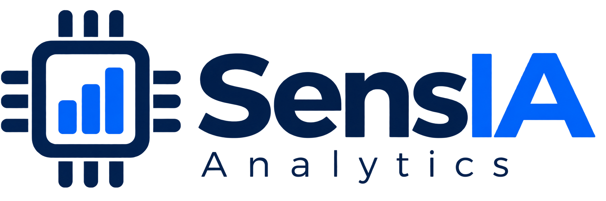

Nivel del agua
Altura de ejemplo respecto a una referencia local.
Tramo recorridoResto del escenario inventadoReferencia ficticia: 2,20 m

Explorar demo ↗Queremos acercar el monitoreo y el análisis de datos a quienes toman decisiones.
Desde el agua en la ciudad hasta los equipos, la energía y el campo.
Explorá el Mburicaó: dónde se mide, cuánto llueve y cómo cambia el nivel del arroyo.
Altura de ejemplo respecto a una referencia local.
Cada barra muestra una ventana de 30 min; no se suman.
Barras tenues: parte del escenario todavía no recorrida.
Elegí un punto para ver sus datos en el mapa y los gráficos.
| Punto | Nivel | Lluvia / 30 min | Estado del escenario |
|---|
Para anticipar inundaciones de verdad necesitamos registros del lugar, revisar el terreno y probar el método. Esta demo no calcula un pronóstico ni emite alertas ciudadanas.
Mapa geográfico real. Las tres estaciones y los cuatro puntos críticos se muestran en coordenadas aproximadas de demostración, pendientes de verificación. Las lecturas son simuladas.
Un mismo lugar para reunir mediciones, revisar cambios y compartir información. Estas funciones forman parte de la visión futura de SensIA.
SensIA busca convertir mediciones en información útil. Estas son otras aplicaciones que queremos explorar, cada una con sus propias pruebas.
Vista conceptual. No es un servicio disponible ni una oferta comercial.
Medir en el lugar y revisar la calidad de cada registro.
Comparar tendencias y evaluar si un modelo mejora una regla sencilla.
Mostrar qué ocurre y ayudar al responsable a revisar la situación.
El piloto del Mburicaó nos permitirá revisar cómo se entiende la información. Las pruebas con datos reales vendrán después.
Mapa de Asunción, escenarios simulados y revisión con posibles usuarios.
Conseguir registros, revisar sensores y comparar métodos de anticipación.
Adaptar la solución a equipos, consumos o agro, validando cada caso.
Esta demo permite probar el mapa, los avisos y el recorrido del usuario. No ejecuta un modelo de IA ni pronostica inundaciones. Todavía debemos validar datos, anticipación y utilidad con personas que atienden emergencias.
El equipo que está construyendo y poniendo a prueba esta idea.
Hardware, software y gestión de procesos y datos.